Data Processing
We found our dataset on a site called WebRobots. This site scrapes the data from kickstarter once a month. Each month contained multiple csv files as the data was so large.
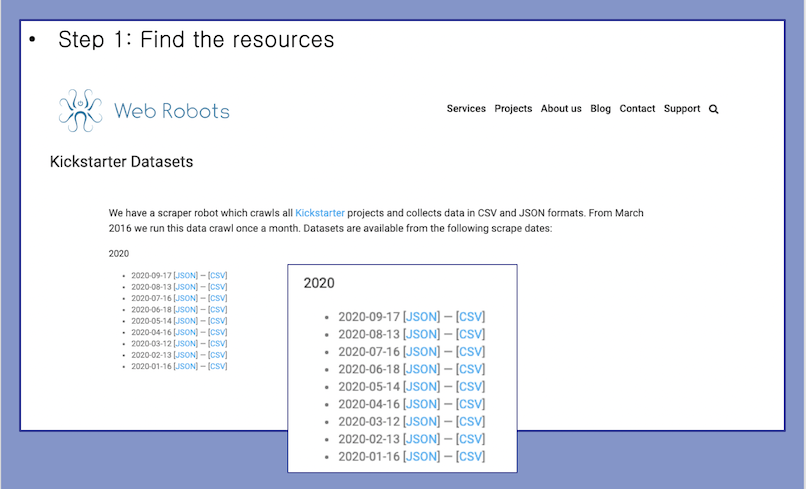We then combined around 700 csv files into one using the below code.
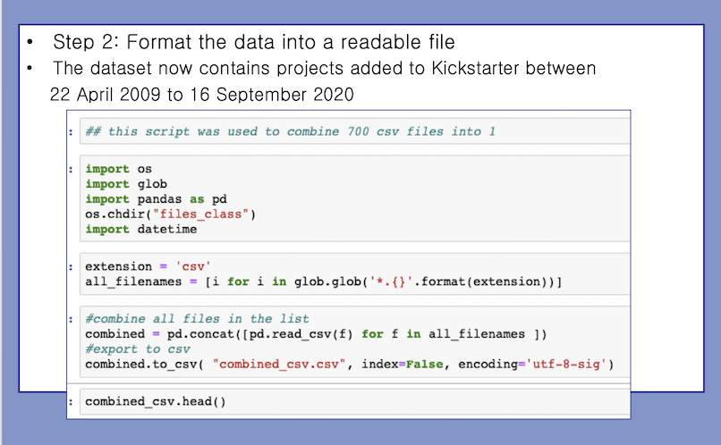The data initially had 2,359,293 rows and 41 columns. The dataset contains projects added to Kickstarter between 22 April 2009 and 16 September 2020. We looked all the columns and looked to see what was relevant
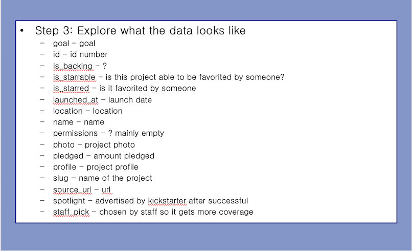We looked for duplicates and null values. This brought the amount of rows down significantly to 222,555 making the data more manageable. We also converted every currency amount to USD
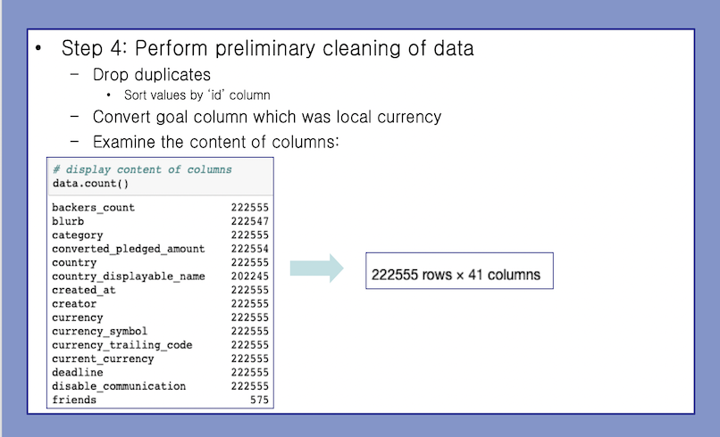We dropped columns with very small values
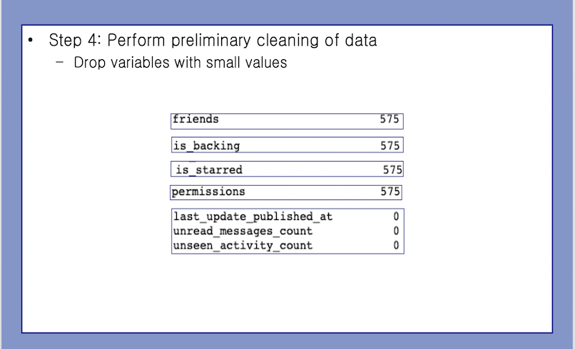We dropped columns that we deemed not relevant to our data
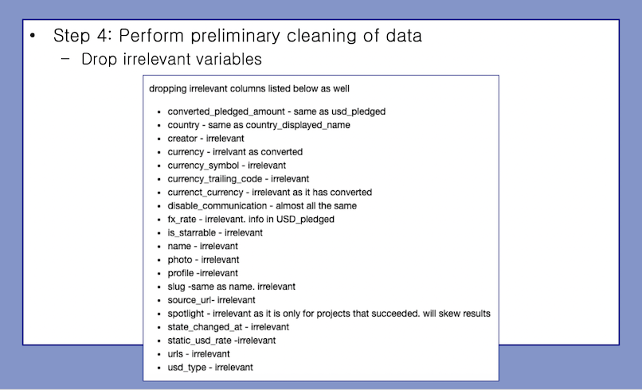We had to convert some of the formats in the columns to be useable for us. this included UNIX time and extracting some information from columns. We also converted the blurb into a numeric as we did not do an NLP.
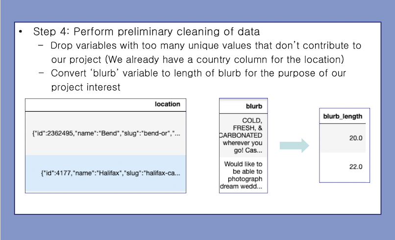We looked at NaN values and zeros and had those replaced with more workable data
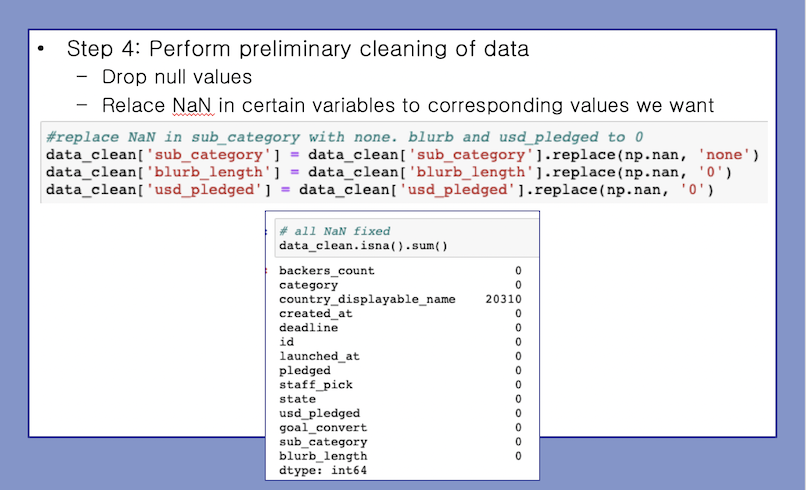We created some extra columns by extracting data from columns
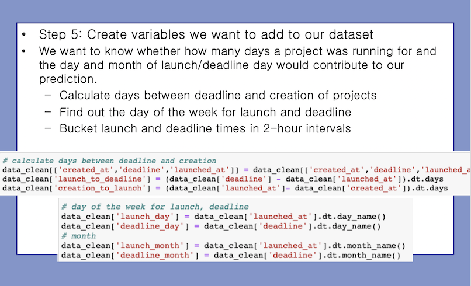We removed some states as they would not have much predicting power
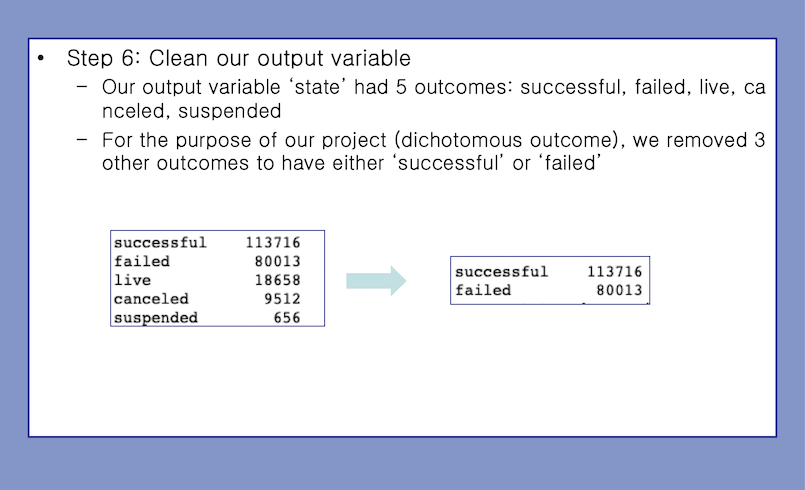 We created an RDS through AWS and PGadmin
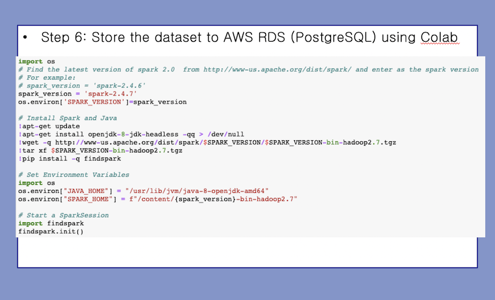
We did this by using co-lab to look at the data and then we had it write to PgAdmin
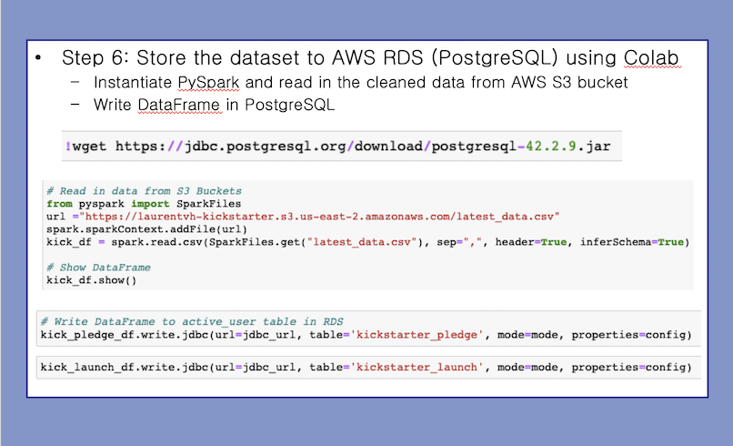We merged a few of the tables in PgAdmin
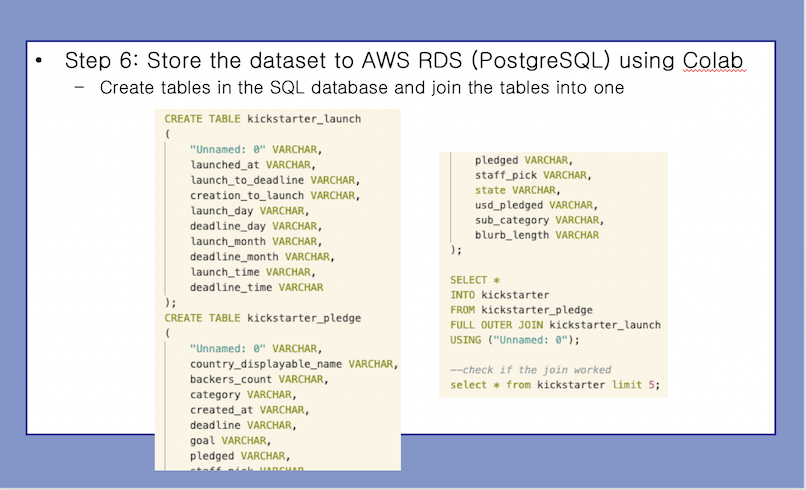